A curated field map of post-training reasoning data
What data actually teaches a model to reason?
Every entry answers one practical question: when a model becomes better at reasoning after post-training, which data record, feedback signal, verifier, reward, environment, or judge made that possible.
280 entries| 165 verified| 87 cards| updated June 2026

01
Browse by track
Fourteen tracks, numbered as in the README contents. Click one to filter the collection below.
02
Reading paths
Curated routes for different readers.
03
Search the collection
Full-text over titles, authors, tags, summaries, venues.